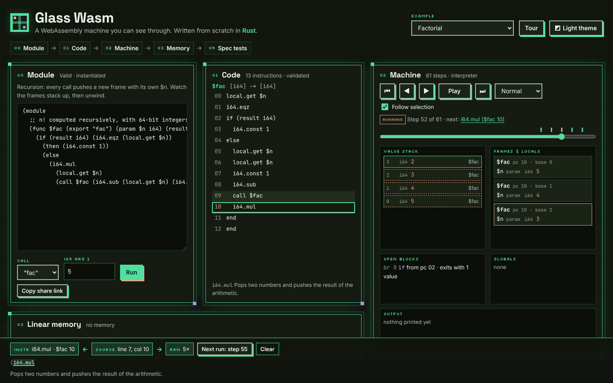

02 · Live
Glass Wasm
A WebAssembly machine written from scratch in Rust, then compiled to WebAssembly itself so it runs in your browser. Load a module, call a function and step through it: the value stack, the call frames and their locals, the open blocks and the bytes of linear memory are all on show.

01 What you can do
- Write WebAssembly by hand. The text format is parsed, validated and instantiated as you type, with errors that point at the line.
- Step the machine. Forwards, backwards, play or scrub; every step replays exactly, so you can go back as far as you like.
- Watch memory. Linear memory byte by byte, following each load and store as it happens.
- Click an instruction. See the line of your module it came from, and every step on the timeline that runs it.
- Run the official tests yourself. One button runs the whole WebAssembly 1.0 testsuite through the same machine, in your browser.
02 How it's graded
By the WebAssembly working group's own testsuite (tag wg-1.0): every module, call and rejection in
all 73 core .wast files. Recorded from the command-line run by scripts/record-results.mjs.
Malformed, invalid and unlinkable modules must be rejected at the right stage; traps must match the expected message. The same counts are reproduced live on the Glass Wasm page.
03 Pane and C programs, and what comes next
Glass Compiler compiles Pane to WebAssembly, and Small C compiles C. Their Open in Glass Wasm links bring the module here, where every instruction is linked back to the line it came from, Pane values read as Pane values, and a C program's output and exit status appear as it runs. Next, a JIT will compile hot functions to x86-64 in the command-line build.